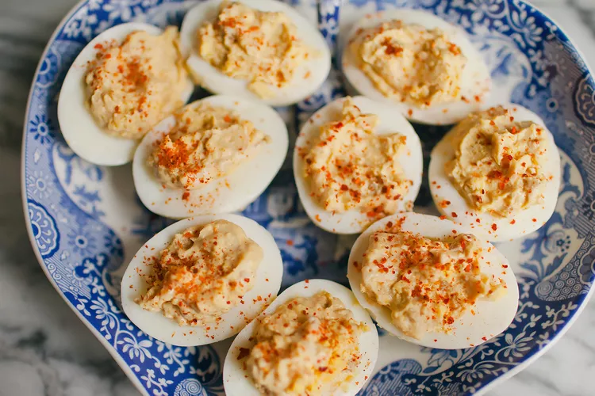

Perfected Deviled eggs

Description
These deviled eggs made with Worcestershire sauce and horseradish appeared on the table at every holiday
and other gathering when I was growing up. My children will stand in front of the refrigerator and eat
one after another — if I don't catch them! You can spice these up with Creole-style or country mustard,
a few dashes (or more!) of hot sauce, and a sprig of parsley.
They're just pretty!
Ingredients
- 8 eggs
- ⅓ cup mayonnaise
- 2 tablespoons Worcestershire sauce
- 2 tablespoons cream-style horseradish sauce
- 1 drop hot pepper sauce, or to taste
- salt and pepper to taste
- 1 teaspoon dried parsley flakes, for garnish
- 1 teaspoon paprika, for garnish
Steps
- Place eggs into a saucepan in a single layer and cover with water by 1 inch.
Cover the saucepan and bring to a boil. Remove from the heat and let eggs stand in
hot water for 15 minutes. Drain and cool under cold running water in the sink.
- Peel cool eggs and cut in half lengthwise. Place yolks into a mixing bowl and set whites aside.
Mash yolks with a fork until smooth; stir in mayonnaise, Worcestershire sauce, horseradish, hot sauce, salt, and pepper.
Spoon yolk mixture into a heavy plastic bag; snip a corner off the bag to create a 1/2-inch opening. Pipe yolk mixture into egg white halves. Chill for at least 30 minutes before serving.
Sprinkle with parsley and paprika to garnish.